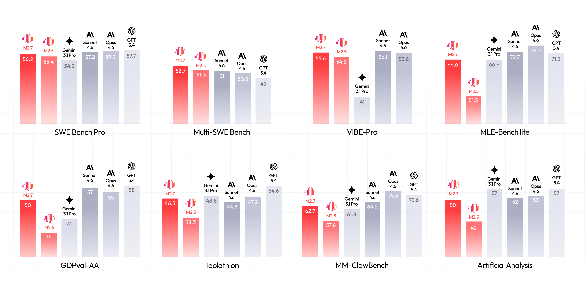
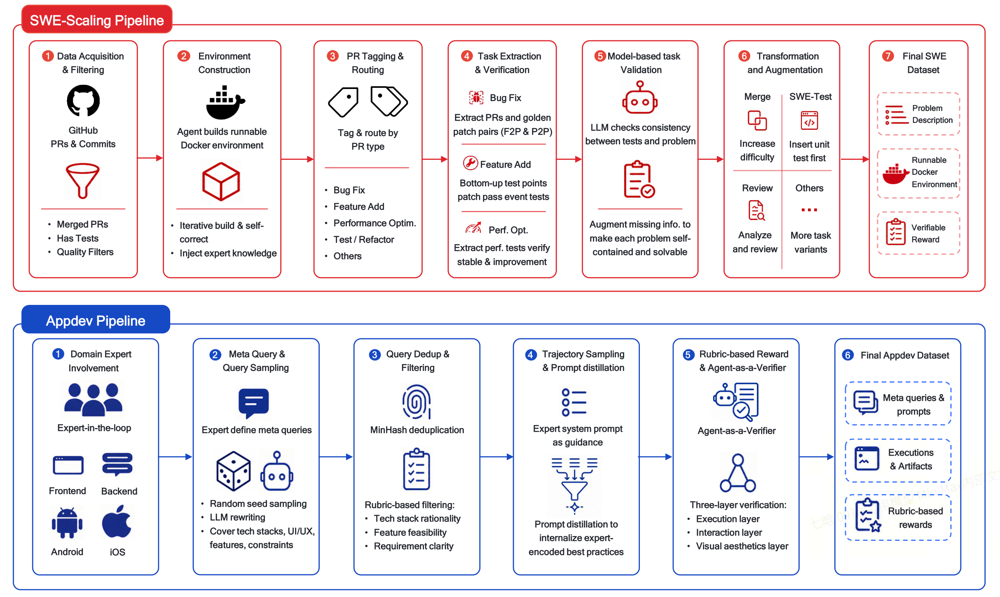
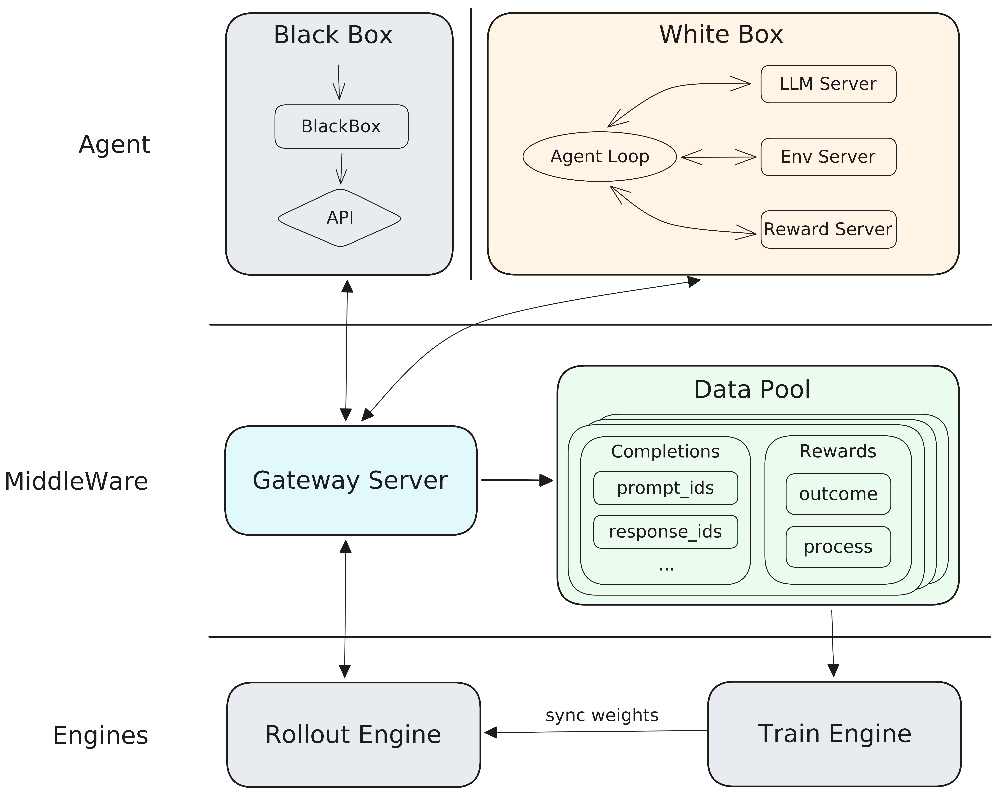
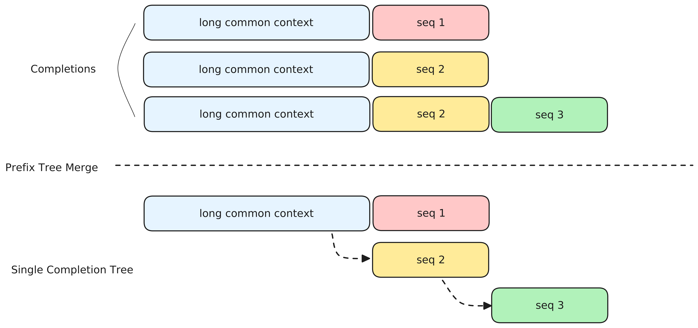
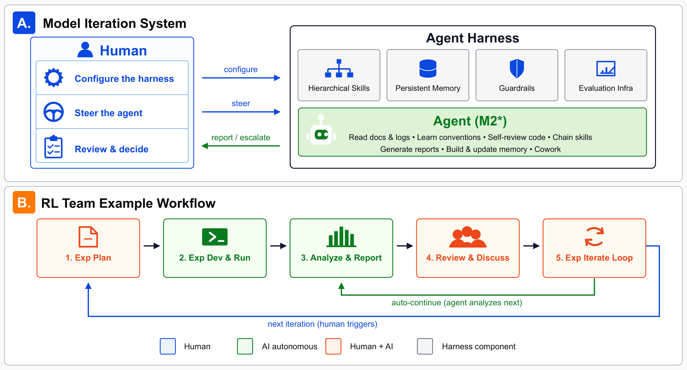
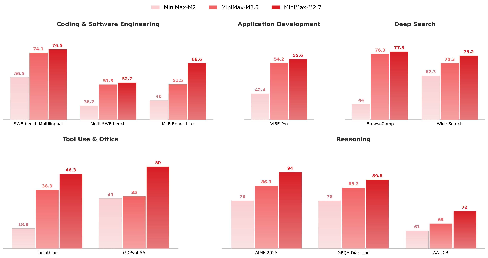

MiniMax-M2 系列：用 mini activation 释放 max 真实世界智能
The MiniMax-M2 Series: Mini Activations Unleashing Max Real-World Intelligence
①开源贡献 Open-source Artifacts
这是一篇 open-weight 技术报告：整个 M2 系列（M2 → M2.1 → M2.5 → M2.7）的模型权重已在 Hugging Face / ModelScope 公开、未 gated、可直接下载，许可证为 modified-MIT。同时 MiniMaxAI 还放出了若干评测/数据资产（如 Role-Play Bench、VIBE、SynLogic 等）。但训练/RL 代码、Forge 系统本身、以及 29.2T 的预训练语料并未开源——GitHub 仓库提供的是推理与部署（SGLang/vLLM/MLX）以及 tool-calling 指南；Forge 仅以技术博客形式描述。下表为解读日（2026-05-30）实际核实的情况。
| 类型 | 是否开源 | 内容 / 链接 |
|---|---|---|
| 代码 Code | ✔（推理/部署） | github.com/MiniMax-AI/MiniMax-M2 仅含推理与部署脚本（SGLang / vLLM / MLX）、tool-calling 指南；许可证 modified-MIT。不含训练代码、RL/Forge 实现。 |
| 模型权重 Weights | ✔ | HF: MiniMaxAI/MiniMax-M2 · M2.5 · M2.7（另有 M2.1） ~229.9B 总参 / ~9.8B 激活，safetensors（F32 / BF16 / FP8-E4M3），ungated；许可证 modified-MIT。亦在 ModelScope、NVIDIA NIM 提供。 |
| 数据集 Dataset | 部分（评测/相关数据） | 预训练语料（29.2T tokens）与 post-training 轨迹未开源。MiniMaxAI HF org 另放出相关数据/benchmark：SynLogic（reasoning）、Role-Play Bench、VIBE、OctoBench 等。 |
| 环境 / Benchmark | ✘（多为内部） | 评测中大量使用内部 benchmark（NL2Repo、VIBE-Pro、HyperTask、RISE、MM Claw、MEWC v2、Finance Modeling Pro），其 harness/环境未开源；公开 benchmark（SWE-bench Pro、Terminal-Bench 2.0、BrowseComp、GDPval 等）沿用第三方。Forge RL 系统未作为代码发布。 |
| 项目主页 / Demo | ✔ | API：platform.minimax.io（限时免费）；产品 Demo：agent.minimax.io（MiniMax Agent）。 |
M2（base + post-training pipeline 的总称），并把同一 pipeline 持续迭代出的 checkpoint 记作 M2 → M2.5 → M2.7。论文给出的 headline 数字几乎都来自最新的 M2.7；架构/预训练参数（62 层、256 experts 等）则对应 base M2。文中所有数字均来自原文 Table / 正文，未作任何外推。
②研究动机与贡献 Motivation & Contribution
背景与问题
LLM 正在从短的单轮对话，迁移到长程（long-horizon）的 agentic workflow：写并交付生产级代码、在开放 web 上检索、操作异构工具、产出结构化 office artifact，往往要跨越数百个交错的 reasoning + action step。作者认为这暴露了两个截然不同的难题：
- 效率与成本瓶颈。agentic 任务天生 ultra-long context，无论 training 还是 inference 都很贵；而生产部署还要求高可用、大规模，这使得「上下文一长就拖垮吞吐」成为系统级痛点。
- 任务本身又难又高风险。真实部署要解决生产级软件工程、知识密集的 office automation 这类复杂任务，对模型的真实世界能力（而非刷榜能力）提出了硬要求。
这两点共同指向一个张力：要么把模型做大（每 token 激活多、算力贵、长上下文更贵），要么牺牲能力。M2 系列要回答的就是——能不能用「小激活」的稀疏 MoE，把这两难同时解掉。
本文的切入点
核心命题是一句口号式的设计原则：mini activations can unleash maximum real-world intelligence（小激活可以释放最大的真实世界智能）。具体做法是：用一个总参数很大（229.9B）但每 token 只激活 9.8B 的细粒度 MoE 作为 base，把每步算力压到约 10B 量级；然后把真实世界能力的「大头」交给一条 agent-native 的 post-training pipeline 去构建——而不是靠堆激活参数。作者反复强调一个观察：每条被接受的训练轨迹的 reward 质量与可信度（可执行验证信号 / judge 证据核验），是把 base model 潜力释放出来的关键，比单纯扩数据量更重要。
核心贡献
- 高保真、大规模的 agent 数据 pipeline。针对 agentic coding、cowork（协同办公）、reasoning、general knowledge 分别设计数据管线，每个任务都配套其 static/runtime 环境、可验证 reward 或可信反馈信号。例如 SWE 任务以 GitHub PR 为源、自动合成多语言可运行 Docker 环境并用 F2P/P2P 测试做 reward；AppDev 用 Agent-as-a-Verifier 在沙箱里真跑应用并打分。
- Forge：agent-native 的 RL 系统。把 training / inference / agent 三者解耦，在统一训练 loop 中同时支持 white-box 与 black-box（仅 API）agent；配合 robustness-first 的算法设计（CISPO + 复合 reward）、windowed-FIFO 调度、prefix-tree merging、以及与部署栈协同设计的推理 kernel，实现稳定的 RL-time scaling。
- M2.7 展示 self-evolution 的早期可运行形态。模型能在自家基础设施上自动 triage 失败的训练 run、跨任务/实验改写自己的 agent scaffold，并在代表性的 ML-engineering 任务上做多轮自我改进。RL 团队日常迭代有 30%–50% 由它分担；它甚至独立跑完 100 轮迭代去优化一个内部 scaffold，带来 30% 提升。M2 → M2.5 → M2.7 在 agentic benchmark 上的逐版增益本身就反映了这一点。
结果一览：仅约 10B 激活参数，M2.7 在 agentic coding（SWE-bench Pro 56.2、SWE-bench Multilingual 76.5、Multi-SWE-bench 52.7、Terminal-Bench 2.0 57.0）、agentic cowork（BrowseComp 77.8、GDPval-AA 50.0、Toolathlon 46.3）、reasoning & knowledge（AIME 2026 94.2、GPQA-Diamond 89.8）上均进入前沿区间，逼近每步算力大一个数量级的闭源系统。

③方法 Method
整套方法可以拆成四层：(A) 预训练架构（小激活 MoE + 全注意力 + MTP）→ (B) post-training 数据 pipeline（agent 驱动、可验证 reward）→ (C) Forge RL 系统（agent-native、三模块解耦）→ (D) agentic 机制与 self-evolution（interleaved thinking + M2.7 自驱迭代）。下面逐层展开。
A. 预训练架构：小激活的细粒度 MoE
M2 是 62 层 decoder-only Transformer，hidden dim 3072，vocab 200,064，229.9B 总参 / 每 token 激活 9.8B，在 29.2T tokens 上预训练，原生上下文 192K。三个关键设计：
① Mixture-of-Experts（细粒度 + sigmoid gating + expert bias）
- Fine-grained experts：FFN 层用 256 个细粒度 expert，每 token 激活 8 个（更多更小的 expert）。这增加了 routing 的组合多样性，并降低跨设备 expert 利用率的方差。消融（2B 激活的小模型，experts 32→128、topk 2→8）显示细粒度在 MATH/MMLU/ARC/HumanEval 上一致占优（如 MATH 19.6→24.1）。
- Sigmoid gating：放弃 softmax top-k，改用 sigmoid——每个 expert 拿到独立激活分数，去掉了 softmax 的零和约束，使多个 expert 能同时高置信激活，routing 动态更平滑。
- Expert bias：在 gating 里引入可学习的 per-expert bias 偏移项，与模型参数联合优化、隐式调节 expert 利用率，从而大幅削减对 auxiliary load-balancing loss 的依赖（沿 aux-free 思路）。
② Attention：在大规模下坚持 full attention
M2 在所有层用 full multi-head attention（48 query head / 8 KV head 的 GQA）+ RoPE，明确放弃了 MiniMax-Text-01 里 Lightning Attention 与 full attention 交错的 hybrid 设计。理由很务实：
- 质量损失难以可靠测量。hybrid 在标准 benchmark（MMLU/BBH/MATH/LongBench）上看似追平 full attention，但规模一大，复杂多跳推理上的缺口就暴露；而 proxy metric 与真实下游表现的相关性很脆弱，换规模/换分布就可能失效。
- 基础设施不成熟。linear/sparse attention 在训练时常 memory-bound，推理上对低精度存储敏感、缺原生 prefix caching、与 speculative decoding 的整合也不清楚。
- 大量 hybrid SWA 实验佐证。他们用数千亿到万亿 token 系统试过 Sliding Window Attention 的各种配比/RoPE/层内层间混合/sink token。预训练阶段所有变体在 retrieval、多跳推理、ICL 上都退化（如 RULER-128K CWE 90.0→72.0，MTOB 60.0→45.0）；SFT 后在 >32K 长上下文差距更明显，而 32K 以内则互有胜负（SWA 在 IFBench、XBench-ds 上甚至略好）。结论：hybrid SWA 的覆盖局限主要伤的是长上下文能力。
③ Multi-Token Prediction（MTP）：训练信号 + 推理 draft
预训练阶段挂一个 MTP 模块（$K=1$，沿 DeepSeek-V3 设计），初始 loss 权重 0.3、decay 期退到 0.1；消融显示 MTP 一致提升，且 reasoning-heavy 任务收益最大。continued pre-training 的 decay 期再从 1 个 MTP 扩到 3 个（$K=3$）以支持多步 speculative decoding——关键技巧是用主模型权重 copy 初始化 MTP 模块（而非随机初始化），这样收敛更快、不会临时拖坏主模型；扩展后先冻结主模型只训 MTP，待其 loss 稳定再联合训练。推理时 3 个 MTP 一次性出 draft token，由主模型一次 forward 验证，在不改变输出质量的前提下提升吞吐。
B. Post-training 数据 pipeline：一切以可验证 reward 为锚
这是 M2「真实世界能力」的真正来源。数据按 agentic coding / agentic cowork / reasoning / general & role-play 组织，统一思路是：任务实例化在真实可运行的 workspace 上；轨迹由轮换的强 teacher model 在被刻意扰动的 scaffold 下蒸馏；接受与否由「与 artifact 格式对齐的验证信号」裁决，而不是一个通用 judge。

Agentic Coding —— SWE / AppDev / Terminal
- SWE-Scaling（真实数据驱动）：六阶段管线——(1) 大规模爬取宽松许可的 GitHub PR + linked issue（diff/测试/问题描述），规则过滤；(2) 用 agent 驱动的执行 loop 为每个 PR 合成可运行 Docker 环境（尤其攻克 Java/Go/Rust/C++ 等编译语言的 toolchain 与异构测试框架）；(3) PR 打标与路由（bug fix / feature / 性能优化 / 重构 / 测试）；(4) test-based 可验证 reward：bug fix 用 F2P + P2P（P2P 确保不引入新 bug），feature 用新增测试点，性能优化用稳定显著的 P2P 差异；(5) 模型校验问题描述与测试的一致性、补全缺失信息；(6) 变换增强（bug injection、commit merging 造多步任务、SWE-Test 反转任务、code review）。最终覆盖 10+ 语言，每条样本 = 问题描述 + test-based reward + 可运行 Docker。
- AppDev（专家在环）：从零造完整应用，无法从现有库里抽。专家贡献 meta query（编码生产级技术模式，如 React+Zustand+Tailwind）与 system prompt，用 LLM 高温扩展 + MinHash 去重 + LLM-as-judge 过滤生成任务。reward 用 Agent-as-a-Verifier（AaaV）：在沙箱里部署应用，分三层验证——Execution Layer（能否构建运行，硬门槛）→ Interaction Layer（用 Playwright 真点按钮/填表单看端到端功能）→ Visual Aesthetics Layer（布局/层次/配色等主观质量）。还有个巧思 prompt distillation：采样时给完整 enriched system prompt，训练时故意丢掉一部分指导，逼模型把专家最佳实践内化成默认行为、减少推理时对 prompt 的依赖。
- Terminal-Gym：以 Stack Overflow 全量数据为种子，规则过滤出可脚本化、终端相关、可验证、Linux/Docker 相关的帖子，rewrite 成结构化任务，再三阶段合成（环境+测试生成→query evolution 去除提示+统一测试集→难度校准，优先保留提示少、zero-shot 通过率低的变体）。正在演进为零干预的 Anything2Docker，并扩展 CVE-Factory 做自动化安全研究。
Agentic Cowork —— deep search / office / 金融表格 / slides
四个子域共享同一范式（真实 workspace + 轮换 teacher 蒸馏 + 与 artifact 对齐的验证）：Deep Search 用 guide-and-rewrite 合成、逐步模糊实体来调难度，并要求答案必须 grounded 在真实检索到的证据上（防编造）；Office（GDPval 锚定）用层级合成 + 多轴 rubric 接受 + typed cleanup 去除编造；金融用 evidence-driven（先跑工具拿 trace 再反推任务）与 workbook-walk 两条管线，接受优先用确定性的 cell 值匹配（外部引擎重算公式）；Slides 因要视觉消费，叠加 execution / 功能 / 布局规则 / 渲染成图后的 visual scorer 等多重信号，并混入不同渲染库防过拟合。
Reasoning 与 General
Reasoning 沿三轴 scaling：query-side（扩唯一问题、补难度带）、response-side（每 query 多条正确解路径——发现 OOD 泛化随 response 数稳定提升，说明学到的是可迁移的解题策略而非记忆答案）、training-side（在固定算力下校准 query 扩展 vs response 扩展的最优配比，动态把资源砸向模型弱区）；配 query/verifier/answer/response 四级 quality assurance。General 与 role-play 提供 long-CoT cold-start，role-play 还单列了 Role-Play Bench 与基于真实产品反馈的 RLHF。
C. Forge：agent-native 的 RL 系统
这是工程上的重头戏。先看建模：把 LLM 当作 policy $\pi_\theta$，把生成过程之外的一切（context 管理、memory 访问、agent 状态转移）都当作 environment。形式化为 MDP $M=(S,A,T,R,\gamma)$：状态 $s_t$ 是当前 context window 内容（指令 + 历史 + 工具输出 + artifact），动作 $a_t$ 是一次单步 LLM completion（可含自然语言推理、工具调用、context 管理操作、与 sub-agent 通信），环境执行后返回观测 $o_t$，下一状态：
$$s_{t+1} = f_{\text{trans}}(s_t, a_t, o_t)$$$f_{\text{trans}}$ 是任意状态转移函数（可能改 context、改 agent loop 内部状态）。关键设计：environment 边界划在「模型的生成接口」处——所有处理/转换/响应模型输出的组件（工具环境、agent harness 的控制流）都算环境。这样训练就以单个 $(s_t, a_t)$ 对为原子单元：policy 不需要去推理或控制状态如何演化（它不必知道 $s_t$ 是简单 append、激进截断还是整段重写来的），而 credit assignment / advantage / reward 传播仍在 episode 级别对完整轨迹 $\tau$ 做。
策略优化：CISPO
沿用并适配自 MiniMax-M1 的 CISPO（Clipped Importance Sampling Policy Optimization），目标：
$$J_{\text{CISPO}}(\theta)=\mathbb{E}\!\left[\frac{1}{\sum_i |o_i|}\sum_{i=1}^{G}\sum_{t=1}^{|o_i|}\mathrm{sg}\!\big(\hat r_{i,t}(\theta)\big)\,\hat A_{i,t}\,\log\pi_\theta(o_{i,t}\mid q,o_{i,直觉：上界 $1+\epsilon^{\text{IS}}_{\text{high}}$ 防止过大的策略更新；下界 0 则允许对在当前 policy 下变得不可能的动作做激进降权。在裁剪后的 ratio 上加 stop-gradient，使 importance weight 只调节梯度幅度、不引入二阶项，得到一个稳定的一阶更新。advantage 用 reward-to-go 减 trajectory-level baseline：$\hat A_{i,t}=\sum_{p=t}^{T} r_p - B_i$。
Reward 设计：长程轨迹的 credit assignment
纯 outcome reward 在动辄 192K token、上千个中间动作的轨迹里不够用，所以设计了复合 reward：
$$r_t=\alpha\cdot r_t^{\text{process}}+\beta\cdot r_t^{\text{speed}}+r_t^{\text{perf}}$$- Process reward $r^{\text{process}}$：稠密的中间奖励，惩罚语言混用、工具调用格式错误，奖励结构良好的中间推理步——给每个 $(s_t,a_t)$ 细粒度监督。
- Task completion time reward $r^{\text{speed}}=h(T_{\text{completion}}/T_{\text{baseline}})$：$h$ 单调递减。传统 RL 只优化正确性，但功能等价的轨迹 wall-clock 可能差很多（串行 vs 并行工具调用）。这一项显式激励 policy 去发现并利用并行机会，产出又对又快的方案。
- Reward-to-go：$G_t=\sum_{\tau=t}^{T}\gamma^{\tau-t} r_\tau$，配 trajectory baseline 降方差，把梯度信号集中到「后果尚未被记账」的动作上。
Mixed-Domain RL：避免灾难性遗忘与负迁移
只在 agentic 任务上单域训会遗忘基础能力，而多阶段顺序训跨域又会负迁移。Forge 用 mixed-domain：训练分多阶段，每阶段每步都同时从 reasoning / coding / agent / general 四域采样。跨阶段系统调三个轴——domain 配比（早期重 reasoning/general 打基础，后期加重 agent/coding）、context length（per-domain 逐步加长，curriculum 式）、difficulty（逐步偏向更难实例）。
RL 基础设施的「不可能三角」与 Forge 架构
大规模 agent RL 要同时满足三个互相冲突的目标：System Throughput（吞吐）、Training Stability（$\mathbb{E}[\mathrm{Var}(\nabla_\theta J)]<\delta$）、Agent Flexibility（支持任意 agent 架构而不改框架）。优化目标写成最大化 Effective Agent Training Yield：$J(\theta)=\mathrm{Throughput}(\mathcal{A})\times\mathrm{SampleEfficiency}(\mathcal{A})$，s.t. 上述方差/收敛约束对所有 $\mathcal{A}\in\Omega_{\text{agent}}$ 成立。Forge 用三个解耦模块经中间件通信：

- White-box agent：把 context 管理逻辑暴露给框架，状态转移 $s_{t+1}=f_{\text{CM}}(\mathrm{concat}(s_t,a_t,o_t))$ 在框架内实现，训练可直接观察并反传 context 变换，从而在真实推理态分布上优化（适合 sliding-window 截断、周期 summarization 等定义清晰的 CM）。
- Black-box agent：把 agent 当不透明轨迹生产者，只把 completion 请求路由到 Gateway，框架只收外部可见的 $(s_t,a_t,o_t)$（$s_t$ 即每次请求时呈现给 LLM 的 context）。这种非侵入方式支持任意内部架构（深度 thinking loop、激进 context 重写、层级多 agent），无需改 agent 侧。
作者称该 Gateway 抽象已在数百种不同 agent scaffold、数千种工具调用格式上验证。三项关键效率设计：
- Windowed-FIFO 调度：agent rollout 完成时间方差极大（秒级到小时级）。严格 FIFO 保分布但有 head-of-line 阻塞；纯贪心最大吞吐但严重分布漂移（前期净是短易任务、难任务挤后期，梯度震荡）。折中方案——只允许在大小为 $W$ 的滑动窗口内贪心取已完成轨迹，跨窗口边界强制 FIFO；$W$ 可调（小→近严格 FIFO，大→近贪心），实践取 $W=0.3N$ 在保持近 FIFO 分布的同时大幅减少集群空转。
- Prefix-tree merging：多轮 agent 轨迹里同组样本有大量共享前缀，传统训练对每个样本独立重算前缀（长上下文下浪费极大）。把共享前缀的多个 completion 合并成一棵前缀树：forward 时共享前缀只算一次再分叉，forward 后按元数据拆树、每样本独立算 loss。由于因果注意力对共享前缀的激活与算几次无关，数学上等价于独立样本训练（零近似误差），实测最高 40× 训练加速并显著省显存。
- 推理加速：(a) MTP-based speculative decoding，MTP 模块用 top-$K$ KL 与 RL policy 持续共训，保证非平稳 RL 过程中 draft 接受率不掉；(b) Prefill-Decode 异构分离（消除 MoE 下 prefill/decode 混排的相互干扰，各自用最优并行）；(c) 全局 L3 KV cache pool（DFS-backed，分组 rollout 调度最大化 prefix cache 命中，cost-aware router 平衡排队延迟与缓存迁移成本）。

D. Agentic 机制：Interleaved Thinking 与 Self-Evolution
Interleaved Thinking（交错思考）
M2 把 interleaved thinking 当作一等公民：模型在单条轨迹内交替产出 reasoning token 与 action token，并把完整 reasoning state 跨轮带下去：
$$\tau=(r_1,a_1,o_1,\,r_2,a_2,o_2,\,\ldots,\,r_T,a_T,o_T)$$每段 $r_t$ 都 condition 在全部历史上，使模型能在选下一个 action 前修订计划、更新假设、纳入新证据。这对立于两种常见做法：(1) front-loaded reasoning（所有推理在动作前一次性产出，无法适应中间观测）；(2) stateless per-turn reasoning（生成 $r_t$ 前把 $r_{
若丢掉 reasoning state（$\mathcal{H}_{t+1}^{\text{(drop)}}=\mathcal{H}_t\oplus[\mathrm{assistant}(a_t)]\oplus[\mathrm{tool}(o_t)]$），模型每轮都要重新推导约束与部分结论，导致累积 state drift、自我纠错变差。这套机制操作化为 Plan-Act-Reflect 循环。消融（剥掉历史 thinking block）显示一致掉点，在 deep search、软件工程等需要长程多步推理的任务上掉得最多。
Self-Evolution（M2.7 的早期自进化）
作者强调这不是突变，而是 M2 系列 agentic 能力稳步增长的产物。为落地，他们做了 Model Iteration System，原则是「humans steer while models build（人掌舵、模型造）」：研究员配目标、用 chat 引导、review 输出决定下一步；agent 跑在一个 完全由内部 M2.7 生成、零人工代码的 Agent Harness 里（具备层级 skill、持久 memory、安全护栏、评测基建）。RL 团队用它跑一个 dual-loop 工作流：人主导实验规划后，M2.7 进入自主执行——profile 在跑的 run、读 log、诊断 metric 异常、自动 debug 代码与调配置、直接介入自己的训练 loop，分担 30%–50% 的日常迭代量；人审触发大迭代决策，agent 在审之间可自动续跑有界分析。最终能做递归 scaffold 升级：在「优化一个内部编程 scaffold」任务上，M2.7 自主跑完 100 轮迭代（分析失败→改代码→评估），引入了 loop detection 等机制、找到更好参数组合，在内部评测上带来 30% 提升——即模型能改进塑造它后续迭代的基础设施本身。

- 预训练分相：constant 相 19.9T tokens；decay 相 9.3T tokens（含短文 decay + 长上下文数据，靠高质量代码拼接、长 PDF、主题相关文档打包做长上下文样本），上下文 8K→32K→192K 逐步扩。
- MTP 扩展务必权重 copy 初始化而非随机；扩展后先冻主模型只训 MTP，稳了再联合训。
- CISPO 的 stop-gradient 加在裁剪后的 importance ratio 上，是稳定性的关键（只调梯度幅度、无二阶项）。
- prefix-tree merging 之所以「零近似误差」，是因为因果注意力对共享前缀的激活与重复计算次数无关——这是它敢声称 40× 加速且不损失训练保真度的依据。
- 评测时 M2.7/M2.5 用 thinking + interleaved-thinking 协议；闭源 baseline 用各自最强 reasoning 配置；agentic benchmark 上所有模型共享同一 scaffold 与工具环境（SWE 类用 Claude Code 作统一 scaffold，GPT 5.4 用自家 CodeX）。
④实验评估 Evaluation
评测设置
- Benchmark / 数据集（按能力分五块）：
- 软件工程 & coding agent：SWE-bench Pro（工业级仓库修复）、SWE-bench Multilingual（跨语言仓库编辑）、Multi-SWE-bench（多仓迁移）、NL2Repo（内部，自然语言→仓库合成）、Terminal-Bench 2.0（终端/系统操作）、MLE Bench Lite（自主 ML 工程，亦作 self-evolution case）。
- 应用开发：VIBE-Pro（内部，端到端全栈）、HyperTask（内部，长程 "vibe coding"，每任务约 100 条需求）。
- Cowork-搜索：BrowseComp、Wide Search、RISE（内部，真实 web 复杂度下多步浏览）。
- Cowork-agent/office/workspace：GDPval-AA（Artificial-Analysis 评判的 GDPval 子集）、Toolathlon（异构工具使用）、MM Claw（内部多模态 office）、MEWC v2（内部，Excel 世界锦标赛难题 100 道）、Finance Modeling Pro（内部，Excel 金融建模）。
- Reasoning & knowledge：AIME 2026（竞赛数学）、GPQA-Diamond（研究生级科学）、SciCode、IFBench（指令遵循）、AA-LCR（长上下文检索+推理）、HLE（Humanity's Last Exam，no-tool 子集）、MMLU-Pro。
- 对比基线：四个最强闭源前沿 reasoning 模型——Claude Opus 4.6 / Claude Sonnet 4.6（extended thinking）、GPT 5.4（high reasoning effort）、Gemini 3.1 Pro（high reasoning effort）；并列上一公开版 M2.5 做系列内参照。
- 指标 Metric：多为任务成功率 / 通过率 / 评分（均越高越好）；reasoning 块在 Artificial Analysis Index v4.0 协议下 no-tool、单样本 pass@1；coding/agentic 块多为 3–4 trials 平均。MLE Bench Lite 报 test-set medal rate（3 次独立 24h trial 的均值）。
主要结果
下表为原文主表 Table 1 的核心内容。每行蓝色加粗为该行最高分；M2.7 / M2.5 为本文模型（M2.7 加粗标注）。"–" 表示该模型在此 scaffold 下未报告或该 benchmark 尚未发布。
| Benchmark | M2.7 | M2.5 | Opus 4.6 | Sonnet 4.6 | GPT 5.4 | Gemini 3.1 Pro |
|---|---|---|---|---|---|---|
| Coding Agent | ||||||
| SWE-bench Pro | 56.2 | 55.4 | 57.3 | 57.2 | 57.7 | 54.2 |
| SWE-bench Multilingual | 76.5 | 74.1 | 77.8 | 75.9 | 70.5 | – |
| Multi-SWE-bench | 52.7 | 51.3 | 50.3 | 51.0 | 49.0 | – |
| NL2Repo | 39.8 | 26.6 | 43.7 | 43.3 | 46.8 | 35.9 |
| Terminal-Bench 2.0 | 57.0 | 51.7 | 65.4 | 59.1 | 75.1 | 68.5 |
| MLE Bench Lite | 66.6 | 51.5 | 75.7 | 72.7 | 71.2 | 66.6 |
| App Dev | ||||||
| VIBE-Pro | 55.6 | 54.2 | 55.6 | 56.1 | – | 41.0 |
| HyperTask | 67.6 | 59.4 | 75.7 | 74.1 | – | 50.9 |
| Search | ||||||
| BrowseComp | 77.8 | 76.3 | 84.0 | 74.7 | 82.7 | 85.9 |
| Wide Search | 75.2 | 70.3 | 79.4 | 75.8 | 77.9 | – |
| RISE | 64.3 | 50.2 | 68.5 | 58.8 | 63.3 | – |
| Office & Tools | ||||||
| GDPval-AA | 50.0 | 35.0 | 55.0 | 57.0 | 58.0 | 41.0 |
| Toolathlon | 46.3 | 38.3 | 47.2 | 44.8 | 54.6 | 48.8 |
| MM Claw | 62.7 | 57.6 | 75.4 | 64.2 | 73.6 | 61.8 |
| MEWC v2 | 63.3 | 49.8 | 62.0 | 77.2 | 76.5 | 42.2 |
| Finance Modeling Pro | 57.0 | 33.8 | 69.0 | 66.2 | 75.3 | 35.6 |
| Reasoning & Knowledge | ||||||
| AIME 2026 | 94.2 | 87.2 | 92.5 | 92.7 | 97.0 | 88.7 |
| GPQA-Diamond | 89.8 | 85.2 | 89.6 | 87.5 | 92.0 | 94.1 |
| SciCode | 47.0 | 43.0 | 51.9 | 46.8 | 56.6 | 58.9 |
| IFBench | 76.0 | 72.0 | 53.1 | 56.6 | 73.9 | 77.1 |
| AA-LCR | 72.0 | 65.0 | 70.7 | 70.7 | 74.0 | 72.7 |
| HLE | 28.0 | 19.0 | 36.7 | 30.0 | 41.6 | 44.7 |
| MMLU-Pro | 81.8 | 85.2 | 89.1 | 87.3 | 87.5 | 91.2 |
怎么读这些数字（诚实评估）：
- 最契合「小激活」论点的是 agentic coding 与 app dev。M2.7 在 Multi-SWE-bench（52.7）上是全场第一；SWE-bench Pro（56.2）、SWE-bench Multilingual（76.5）、VIBE-Pro（55.6）基本与闭源前沿打平——而它每步只激活约 10B 参数，对手往往大一个数量级。这是论文最硬的卖点。
- 真正「赢一行」的地方不多，更多是「贴身逼近」。除 Multi-SWE-bench 外，多数行的最高分仍由 GPT 5.4 / Gemini 3.1 Pro / Opus 4.6 拿走。M2.7 的定位是「用零头算力进入前沿区间」，而非全面登顶。
- 明显落后的项要说清楚：Terminal-Bench 2.0（57.0 vs GPT 5.4 的 75.1）、HLE（28.0 vs 44.7）、Finance Modeling Pro（57.0 vs 75.3）、MM Claw（62.7 vs 75.4）、SciCode（47.0 vs 58.9）、MMLU-Pro（81.8，甚至低于自家 M2.5 的 85.2）这些更偏「重知识 / 极难闭式 / 特定工具」的项，与前沿仍有可见差距；MMLU-Pro 的回退尤其值得注意（可能是 post-training 把容量更多投向 agentic 能力的权衡）。
- 系列内增益巨大且有规律。M2.5→M2.7 在新引入任务族上猛涨：Finance Modeling Pro +23.2、GDPval-AA +15.0、MEWC v2 +13.5、NL2Repo +13.2、RISE +14.1、MLE Bench Lite +15.1；而原本就强的 SWE-bench Multilingual/Multi-SWE-bench 只小步前进。这印证了「增益主要来自数据 pipeline 的针对性投入」。

消融 / 分析
论文的关键消融/分析支撑了三个设计：
- 架构消融：(a) fine-grained experts（32→128，topk 2→8）在 MATH/MMLU/ARC/HumanEval 上一致优于 baseline；(b) MTP 一致提升、reasoning 任务收益最大；(c) full attention vs hybrid SWA 的大量预训练/SFT 对比，证明 SWA 主要伤长上下文（>32K）能力，是放弃 hybrid 的依据。
- Interleaved thinking 消融：剥掉历史 thinking block 后 agentic benchmark 一致掉点，deep search / 软件工程掉得最多——证明 reasoning state persistence 在长程任务上最关键。
- Self-evolution case study（MLE Bench Lite）：用一个零人工代码、靠短期 memory + 自我批评驱动的 autonomous harness，让 M2.7 当独立 ML 工程师跑 22 个竞赛、每次 24h 迭代、3 次独立 trial。最好一次拿 9 金 5 银 1 铜，平均 66.6% medal rate，追平 Gemini 3.1 Pro，且 medal rate 随迭代轮次稳步上升（图见原文 Figure 3）。作者强调价值不只在数字，更在于「模型愿意主动 debug 自己的训练 scaffold、改配置、迭代上百轮」这一定性行为。
⑤洞见 Insights
- 真实世界能力的「大头」搬到了 post-training，而非激活参数量。M2 用一个仅激活 9.8B 的 MoE 进入前沿区间，靠的不是把模型做大，而是「可执行环境 + 可验证 reward」的数据 pipeline 与 agent-native RL。这把社区习惯的「scaling 激活参数」叙事，部分替换成「scaling reward 的质量与可信度」——作者明说后者比数据量更重要。
- 把 environment 边界划在「模型生成接口」处，是 agent RL 的关键抽象。由此 policy 只需对单步 $(s_t,a_t)$ 负责、不必理解 context 如何演化，框架就能同时容纳 white-box 与 black-box（含闭源 API）agent，而 credit assignment 仍在 episode 级别做。这套解耦是 Forge 能「适配数百种 scaffold」的根。
- self-evolution 不必是「模型改自己权重」，而可以是「模型改塑造自己的基建/scaffold」。M2.7 自动 debug 训练 run、零人工代码生成 harness、跑 100 轮优化内部 scaffold（+30%），把最贵的 human-in-the-loop 瓶颈部分关上。这是一个工程上可立即落地、又指向 recursive self-improvement 的中间形态。
局限与未来
- 评测以内部 benchmark 与内部 scaffold 为主。NL2Repo、VIBE-Pro、HyperTask、RISE、MM Claw、MEWC v2、Finance Modeling Pro 等均为内部、未开源，且 SWE 类统一用 Claude Code scaffold（GPT 5.4 用 CodeX）。这意味着跨模型可比性与可复现性有限，外部很难独立核验「打平前沿」的强弱边界。
- 仍有明显短板。Terminal-Bench 2.0、HLE、SciCode、Finance Modeling Pro、MM Claw 等与前沿差距可见；MMLU-Pro 甚至低于自家 M2.5——提示「把容量投向 agentic」可能以部分纯知识能力为代价。
- 方法描述偏「系统/配方」层面。很多 reward/数据细节（系数 $\alpha,\beta$、各域配比、难度曲线、teacher 选择）是定性叙述，缺精确超参与逐项消融；Forge、训练代码、语料均未开源，复现门槛高。
- self-evolution 尚是早期形态。目前是「人掌舵、模型造」，承担 30%–50% 迭代量、并在受控 MLE 任务上验证；离真正自主的 recursive self-improvement 还远，安全护栏与失控风险也只是点到为止。作者自陈三条轴（数据 / RL 系统 / self-evolution）都远未饱和，后续 M2.x 会继续三轴同步 scaling。
与相关工作的关系
基于本文自身的论述：架构上沿用 DeepSeekMoE 的 fine-grained experts、GQA、RoPE、DeepSeek-V3 式 MTP 与 speculative decoding，是当下 open-weight MoE 的主流配方；但显式放弃了自家 MiniMax-Text-01 的 hybrid（Lightning + full）attention，回到全注意力，理由是大规模下 hybrid 的长上下文质量损失难以可靠测量、基建不成熟。RL 算法 CISPO 承自 MiniMax-M1。真正把 M2 与同类 open-weight 报告区分开的，是把整套 agent-native 数据+RL+self-evolution 体系当作一等公民，并以「小激活进入前沿」作为统一叙事——相对「靠更大激活/更多算力刷榜」的路线，这是一条以工程化 reward 与系统解耦为核心的差异化路径。